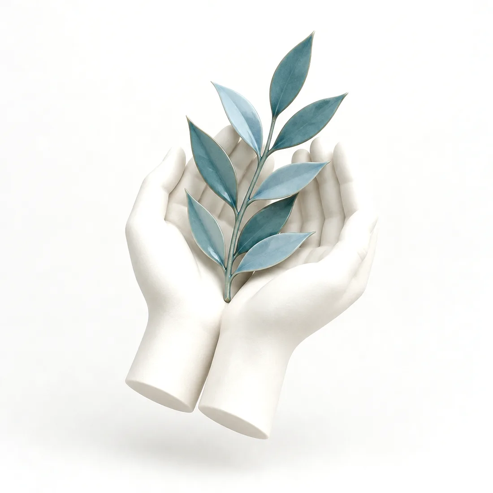
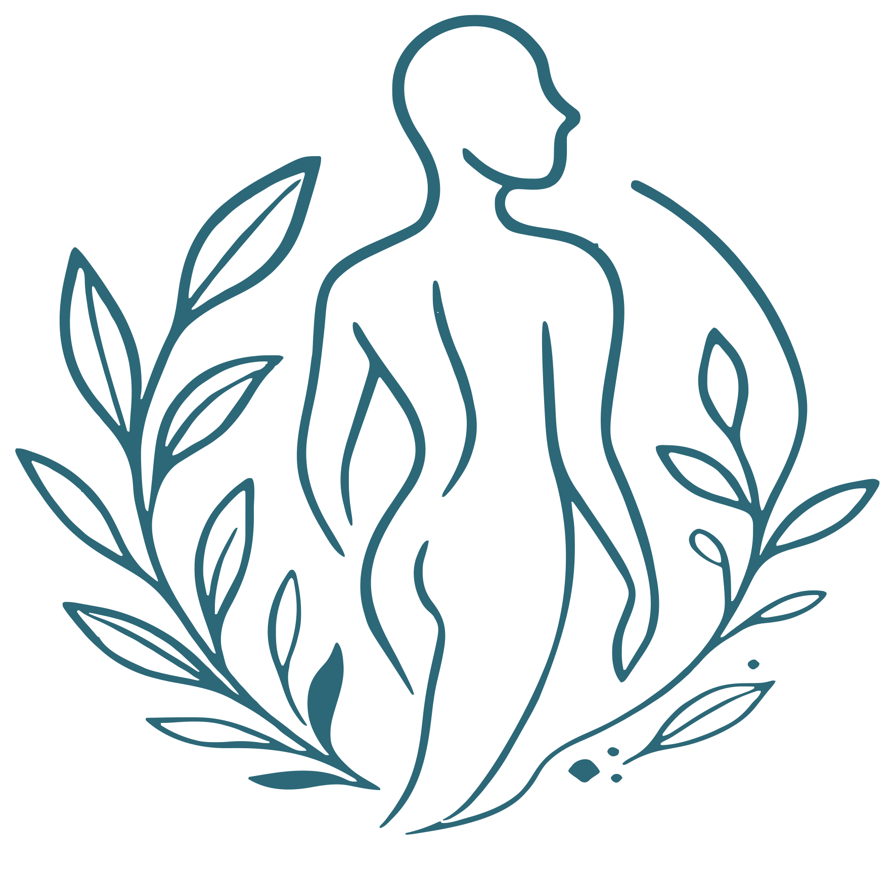

Fisioterapia e Bem-Estar · Arcozelo, Vila Nova de Gaia
Recuperar o corpo,
cuidar da pessoa.
Fisioterapia com Sofia Cardante, no seu gabinete em Arcozelo. Um trabalho de mãos, de escuta e de método, dedicado sobretudo ao pavimento pélvico, à reabilitação oncológica e à Reeducação Postural Global.

I Manifesto
A fisioterapia é um trabalho de mãos. Mas o que se cuida é a pessoa inteira: o corpo e a mente não se separam.
Cada acompanhamento começa por escutar. Perceber a história, o ritmo e os objetivos de quem chega, antes de qualquer técnica.
A fisioterapia não promete curas. Faz parte de uma equipa que ajuda a devolver funcionalidade, autoestima e qualidade de vida. E é na prevenção que estão os maiores ganhos.
A missão do fisioterapeuta, nas palavras da Sofia: «restituição do bem-estar e da qualidade de vida da pessoa».
II Sobre a Sofia
Sofia Cardante
Cédula profissional
n.º 7568
Ordem dos Fisioterapeutas · inscrição ativa
Consultar o registo públicoFisioterapeuta e rosto da Cardante – Fisioterapia e Bem-Estar, em Arcozelo, Vila Nova de Gaia.
Licenciada em Fisioterapia pelo Instituto Piaget, com formação inicial em Neurofisiologia, foi fisioterapeuta no Hospital Lusíadas Porto até 2022, ano em que abriu o seu gabinete. Dedica-se sobretudo à fisioterapia do pavimento pélvico, à reabilitação oncológica e à Reeducação Postural Global, e continua a aprofundar a área dermatofuncional mestrado em curso · a confirmar.
Acredita que a fisioterapia devolve funcionalidade, autoestima e qualidade de vida, e que é na prevenção que estão os maiores ganhos. Diz que foi a profissão que a escolheu: veio do desporto e começou como auxiliar de fisioterapia, quase por acaso.
Percurso
- InícioCurso de auxiliar de fisioterapia e trabalho como assistente numa clínica em Vila Nova de Gaia.
- NeurofisiologiaFormação em Neurofisiologia (CESPU – ESSVA) e trabalho como técnica no Hospital Lusíadas.
- FisioterapiaLicenciatura em Fisioterapia, Instituto Piaget, Vila Nova de Gaia, feita enquanto trabalhava.
- 2018 – 2022Fisioterapeuta no Hospital Lusíadas Porto.
- 2021Oradora no webinar Fisioterapia em Oncologia – Retração mamária pós radioterapia, Lusíadas Knowledge Center.
- 2022Abre o seu gabinete em Vila Nova de Gaia: hoje, a Cardante – Fisioterapia e Bem-Estar, em Arcozelo.
- Sempre a aprenderCurso de Oncologia e Estilo de Vida (European School of Lifestyle Oncology, 100 h) e formação em oncologia da mama. Mestrado em Fisioterapia Dermatofuncional, ESS do Politécnico do Porto a confirmar.
III Áreas de cuidado
Três áreas, uma atenção inteira.
-
Pavimento Pélvico
Consulta dedicada à avaliação e ao tratamento das disfunções do pavimento pélvico.
-
Reabilitação Oncológica
Fisioterapia aplicada ao tratamento oncológico, em todas as fases do processo, para recuperar funcionalidade e diminuir a dor e o desconforto.
-
Reeducação Postural Global
Avaliação postural e tratamento através de posturas globais que trabalham as cadeias musculares, o método conhecido como RPG.
Outras áreas de intervenção
Estas áreas resultam da formação e do percurso da Sofia e aguardam a sua confirmação antes da publicação.
- Oncologia da mamaRecuperação após cirurgia e radioterapia da mama: mobilidade, cicatriz e retração dos tecidos.a confirmar
- Fisioterapia dermatofuncionalCuidado dos tecidos e da pele após cirurgia, radioterapia ou cicatrizes.a confirmar
- Músculo-esquelética e pós-cirúrgicaTratamento da dor e recuperação após lesão ou cirurgia, com plano individual.a confirmar
- Fisioterapia pediátricaAcompanhamento de bebés e crianças, por exemplo no torcicolo congénito ou em alterações posturais.a confirmar
- Postura e prevençãoAvaliação postural, ergonomia e exercício para prevenir lesões, em adultos e crianças.a confirmar
IV Como trabalha
Devagar, com método.
-
Primeira consulta
Um tempo para conversar: a sua história, as queixas e o que é importante para si no dia a dia.
-
Avaliação
Avaliação física e funcional, da postura ao movimento, para compreender a origem do problema e não apenas o sintoma.
-
Plano individual
Um plano definido consigo, com objetivos realistas, revisto ao longo do acompanhamento.
-
Prevenção
Exercícios e orientações para o dia a dia, para que os ganhos se mantenham para lá da consulta.
A fisioterapia trabalha em equipa: sempre que faz sentido, em articulação com o seu médico e outros profissionais de saúde.
V Na imprensa
A Sofia tem partilhado o que sabe com o público.
- 08.05.2018MAGGBabywearing: quando e como usar o porta-bebés, com cuidado com a coluna dos pais.
- 08.09.2018Notícias ao MinutoEntrevista no Dia Mundial da Fisioterapia: a profissão que recupera o corpo e a mente.
- 17.09.2018MAGGMochilas pesadas e a coluna das crianças: o que fazer.
- 02.10.2018Atlas da SaúdeArtigo assinado pela Sofia: como uma má postura pode influenciar a saúde, e o papel da RPG.
As ligações abrem os artigos originais noutro separador.

VI Contacto e marcação
Marque a sua consulta.
Para marcar, ligue:
Ligar 914 378 487- Morada
- Praceta Aldeia 31
4410-457 Arcozelo
Vila Nova de Gaia Ver no mapa - Acessibilidade
- Entrada, estacionamento e WC acessíveis a cadeira de rodas.
- @cardantefisio